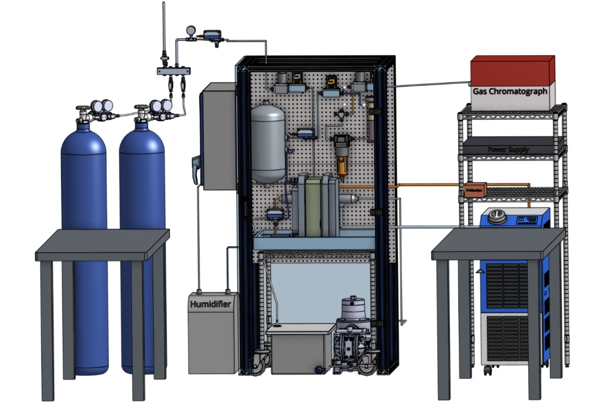
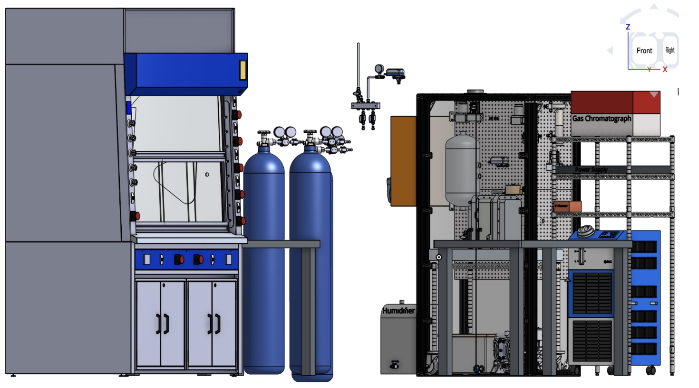

10 kW CO₂ Electrolyzer System
Helix Carbon (The Engine, MIT) · Summer 2026. I led mechanical integration of Helix Carbon’s 10 kW electrolyzer system, from the walk-in frame to the enclosure and routing of every line inside it.

Overview
At Helix Carbon I worked as a Mechanical Design & Manufacturing Intern on hardware for CO₂ electrolysis: electrochemical reactors that use electricity to turn captured CO₂ into useful products. The 10 kW system brings the electrolyzer stack, gas supply, humidification, liquid handling, thermal control, power and a gas chromatograph for product analysis together into one serviceable unit.
I led its mechanical integration. The job was to get hundreds of components into one frame so they could be assembled, plumbed, inspected and kept safe, without the layout getting in the way of the chemistry.

Frame & Enclosure Design
I designed the system in Onshape around a walk-in 80/20 aluminium frame with a polycarbonate enclosure. I chose the structural extrusions and the door layout so the stack, pump, reservoir and instrumentation stay reachable for maintenance, while everything wet and everything pressurized stays inside the enclosure.
- Walk-in 80/20 frame: I chose the extrusion sizes and structure for the stack and hanging components
- Polycarbonate enclosure and door architecture designed for access and visibility
- Hundreds of components packaged: valves, regulators, sensors, filters, tanks, pump and stack

Tubing Automation & Ventilation
With so many components, routing the tubing by hand in CAD would have been slow and hard to update after every layout change. I wrote a custom Onshape FeatureScript that routes the tubing automatically, so the plumbing regenerates whenever a component moves.
I also modelled the rig in the context of the full lab, including the fume hood and gas cylinders, and sized the enclosure exhaust so the enclosure stays under negative pressure. That way any leak is drawn into the exhaust instead of spreading into the room.